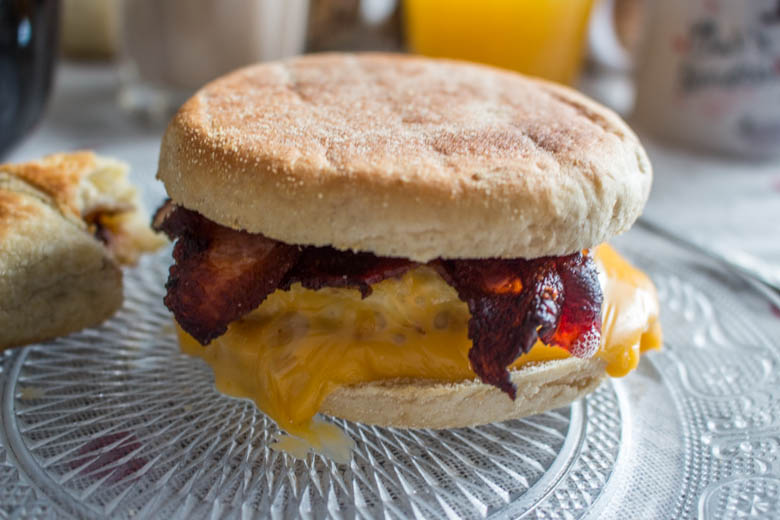
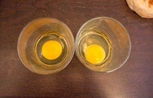
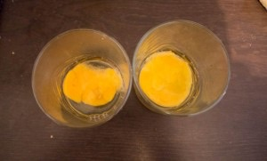
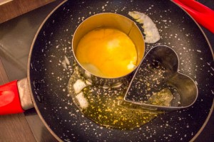
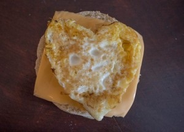
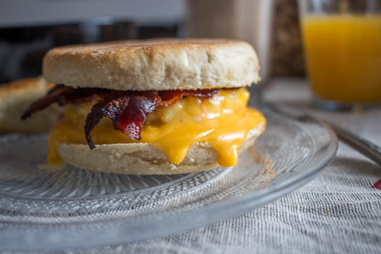

Qui vient bruncher? Je vous prépare un egg muffin!

Êtes-vous nombreux à bruncher? Parce que nous oui!! Pour l’occasion je vous présente mon délicieux egg muffin!
La très jolie Aude du superbe blog contes et délices nous a proposé pour la 3ème édition de la Foodista Challenge le thème du brunch et ça tombe très bien car nous on adore ça! Il n’y a presque pas une semaine où on ne brunch pas!
Avant de vous présenter la recette je vais faire un rapide rappel pour vous présenter ce qu’est la Foodista :
Il s’agit d’un défi culinaire, entre blogueurs et non blogueurs autour d’un thème commun décidé par la marraine désignée à chaque édition, crée par… moi-même! J’ai donc fixé les règles du jeu et chaque marraine doit en plus de décider d’un thème, choisir deux règles parmi les suivantes (histoire de pimenter un peu le tout): – Un ingrédient imposé pour les recettes sucrées et un autre ingrédient pour les recettes salées (un ingrédient commun si cela est possible) ; – Une couleur qui devra être présente dans la recette ou dans la décoration ; – Un pays qui inspirera les recettes du thème ; – Un accessoire qui devra se trouver sur les photos
Anciennes éditions : Foodista#1 : Cupcakes & muffins par Cuisine moi un mouton Foodista#2 : Goûter d’automne par Goulucieusement
Pour cette édition le thème choisi par Aude est:
J’ai donc décidé (enfin mon chéri a plutôt insisté) de faire un délicieux egg muffin qui est tout simplement son petit déjeuner favori! Vous avez presque tous sans doute un jour pris votre petit déjeuner chez « Macdo » dans lequel on retrouve ce fameux egg muffin? Eh bien moi je vous en propose un presque pareil sauf qu’il est « homemade » 🙂 et ça change tout! Pour être dans le thème j’ai sorti ma jolie nappe avec des petits cœurs rouges et un de mes mugs rouge pour l’occasion!
Depuis son retour du Canada mon chéri n’arrête pas de m’en demander pour le petit déjeuner alors c’est bien pour lui faire plaisir que je partage avec vous cette recette qu’il faut dire est vraiment extra!
Pour notre petit brunch vous pourrez retrouver les délicieux croissants au Nutella et mon granola fait maison, puis tout plein d’autres bonnes choses 🙂
Mais aujourd’hui je ne vous parlerai que de la recette de mon egg muffin! Pour ceux qui ont la motivation de faire eux même leurs muffins la recette est juste ICI!!
Place maintenant à la recette et bon brunch à tous 😉
Ingrédients
- English muffin - 2
- Oeuf - 2
- Lard - 4 tranches fines
- Cheddar - 4 tranches
Instructions
- Dans une poêle, faire revenir le lard avec un peu d'huile ou de beurre (moi j'ai utilisé du beurre clarifié)
- Dans un verre, casser les œufs
- Avec l'aide d'une fourchette crever les jaunes (attention ne fouettez pas, on ne veut pas une omelette!!)
- Dans une poêle verser de l'huile ou faire fondre du beurre
- Beurrer l'emporte pièce pour éviter que l’œuf ne colle au moment du démoulage
- Poser l'emporte pièce dans la poêle en versant l’œuf dedans en maintenant l'emporte pièce bien collé contre la poêle pour éviter que l’œuf ne passe en dessous
- Pendant la cuisson donner des petits coups de fourchette pour que cela cuise uniformément
- Une fois que le dessus de l’œuf commence à cuire et n'est plus liquide, décoller l'emporte pièce de l’œuf et l'enlever
- Retourner l’œuf dans la poêle à l'aide d'une spatule et laisser cuire pendant 1 petite minute
- Sortir du feu
- Toaster vos muffins
- Déposer dans l'ordre, une tranche de cheddar, puis l’œuf, une autre tranche de cheddar et enfin le lard
- Enfourner 3 minutes pour que le fromage soit bien fondu
- Il est temps maintenant de déguster ! Bon appétit à tous! 🙂






Les tips de la communauté
Recette brunch très demandée avec un accueil massif. Les lecteurs adorent l'alternative à l'egg muffin version McDonald's. L'auteure promet des tests futurs avec d'autres techniques de levage.
Astuces
- Servir tiède ou chaud pour meilleur résultat
- Testations possibles avec levain pour réduire le goût de levure
- Recette peut être préparée à l'avance et réchauffée
- Le fromage fondant qui dégouline est crucial pour l'effet visuel et gustatif
Variantes suggérées
- Utiliser du levain à la place de levure pour améliorer le goût
- Adapter la garniture selon les préférences (mozza au lieu de fromage frais)
Ajustements signalés
- dire que les croissants au nutella me font de l’oeil aussi 😉 Au fait je ne savais pas que ton chéri était allé au Canada (nous allons avoir des choses à nous dire alors…) Bravo encore pour ce super brunch!Bisous Steph <3
- choses à faire avant le salon du blog!
- que je fasse à mon chéri ! Il adooore les oeufs !